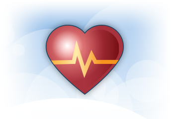

Länsförsäkringars hälsotjänster är utvecklat av SOS International AB


Bristen på fysisk aktivitet och dålig kondition är en stor anledning till att allt fler blir överviktiga och har dålig ork. Prestationsförmågan minskar och risken för att utveckla sjukdomar ökar.
Det viktigaste du kan göra är därför att komma igång och röra på dig. Det är också viktigt att din motion blir regelbunden. En halvtimmes rask promenad om dagen är en mycket bra början. Men om konditionen ska bli riktigt bra behöver du få upp pulsen ordentligt minst tre gånger i veckan.
Det finns många möjligheter till vardagsmotion. Ta trapporna i stället för hissen, promenera en stund på lunchrasten, gå av bussen en hållplats tidigare, cykla till jobbet eller delta i barnens lekar. Städning, gräsklippning, snöskottning är också fysisk aktivitet.
Har du dessutom möjlighet att genomföra några pulshöjande träningspass varje vecka så är det bra. Fysisk aktivitet kan innebära många olika former av aktiviteter. Till exempel simning, skidåkning, cykling, bollspel, racketsporter, motionsgymnastik, joggning, löpning eller gymträning.
Oavsett om du vill gå ner i vikt eller inte mår du bättre av att motionera. Gör du detta du regelbundet märker du snart att konditionen ökar. Du orkar mer och sover skönare. På köpet får du också ett bättre humör.
Länsförsäkringars hälsotjänster är utvecklat av SOS International AB